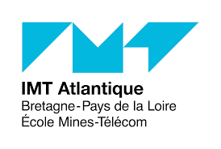

En 2ème année de BUT Réseau et Télécommunication. Je compte faire mon alternance à Orange.
Ou encore Nokia ou bien Thales car ce sont des entreprises réputées. Qui ouvre beaucoup de portes
vers d'autres entreprises. Ceci me permettrait d’établir un réseau relationnel dans le monde professionnel.
Après l'Université

Après l’obtention de mon diplôme BUT Réseau et Télécommunication.
Je compte poursuivre mes études dans une école d’ingénieur :
IMT Atlantique. Cette école offre des formations en collaboration
avec des entreprises. Tel que Orange, Crédit Agricole, AIRBUS, EDF.
Des entreprises que j’affectionne. Cette école à un rythme d'alternance
long et sous statut d'apprenti. Cela me permettra d’étendre mon bagage
technique et développer davantage mes "soft skills".